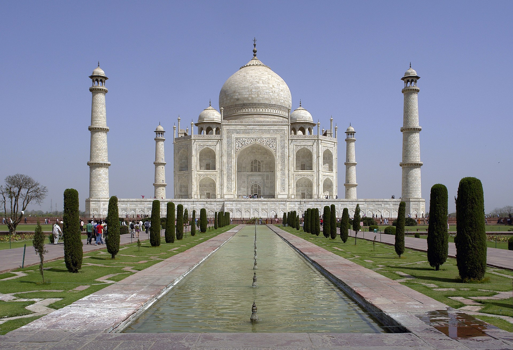

The Taj Mahal is widely considered one of the most beautiful buildings ever created. The exquisite marble structure in Agra, India, is a mausoleum, an enduring monument to the love of a husband for his favorite wife. It's also an eternal testament to the artistic and scientific accomplishments of a wealthy empire
The Taj Mahal is an ivory-white marble mausoleum on the south bank of the Yamuna river in the Indian city of Agra. It was commissioned in 1632 by the Mughal emperor, Shah Jahan (reigned from 1628 to 1658), to house the tomb of his favourite wife, Mumtaz Mahal.